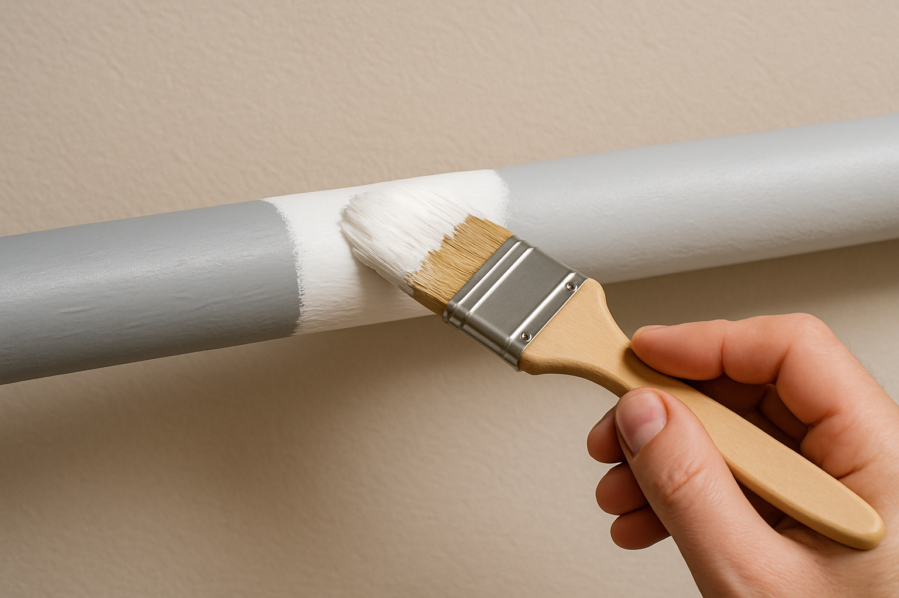

Cevi v prostoru pogosto niso v središču pozornosti, a kljub temu pomembno vplivajo na celoten vizualni vtis prostora. S skrbno izbrano barvno obdelavo jih lahko uspešno vključimo v estetski koncept notranjosti ali pa jih izpostavimo kot zanimiv dekorativni element. Pleskanje cevi ni zgolj kozmetični poseg – gre tudi za funkcionalen postopek, ki cevi ščiti pred rjo, vlago, obrabo in drugimi škodljivimi vplivi iz okolja. Postopek se začne s temeljito pripravo površine, ki vključuje čiščenje, odstranjevanje morebitnih sledi rje in stare barve, ter nanos primernega temeljnega premaza. Šele nato sledi nanos kakovostnih barv, posebej prilagojenih za kovinske ali plastične površine – pogosto so to toplotno odporne, antikorozivne in pralne barve, ki zagotavljajo obstojnost tudi v bolj zahtevnih razmerah, kot so kopalnice, kuhinje ali tehnični prostori. Barvne možnosti so zelo raznolike – cevi je mogoče prebarvati v nevtralne tone, ki se neopazno zlijejo s steno ali stropom, ali pa uporabiti kontrastne odtenke, ki ustvarijo sodoben, industrijski videz. Pleskanje cevi je zato odlična priložnost, da z minimalnim posegom dosežemo velik estetski učinek in hkrati podaljšamo življenjsko dobo cevi.
PLESKANJE CEVI
